영어 시제 12개,
문장까지 직접 만들었어요 ✍️
Math and chemistry are wrapped up, so today we started somewhere new: English grammar. And rather than easing in, we went straight for the part most learners avoid — all twelve verb tenses, on one chart.

🕰️ Past, Present, Future — Times Four The whole system at once
English tenses are usually taught one at a time, which makes them feel like twelve unrelated rules to memorise. Laid out as a grid, they stop being a list and start being a system: three times, four aspects, and the pattern repeats all the way across.
| Past | Present | Future | |
|---|---|---|---|
| Simple | didSimple Past | doSimple Present | will doSimple Future |
| Continuous | was doingPast Continuous | am doingPresent Continuous | will be doingFuture Continuous |
| Perfect | had donePast Perfect | have donePresent Perfect | will have doneFuture Perfect |
| Perfect Continuous | had been doingPast Perfect Cont. | have been doingPresent Perfect Cont. | will have been doingFuture Perfect Cont. |
Once the shape is visible, will have been doing is no longer a mysterious phrase — it is simply future plus perfect plus continuous, exactly where the grid says it should be.
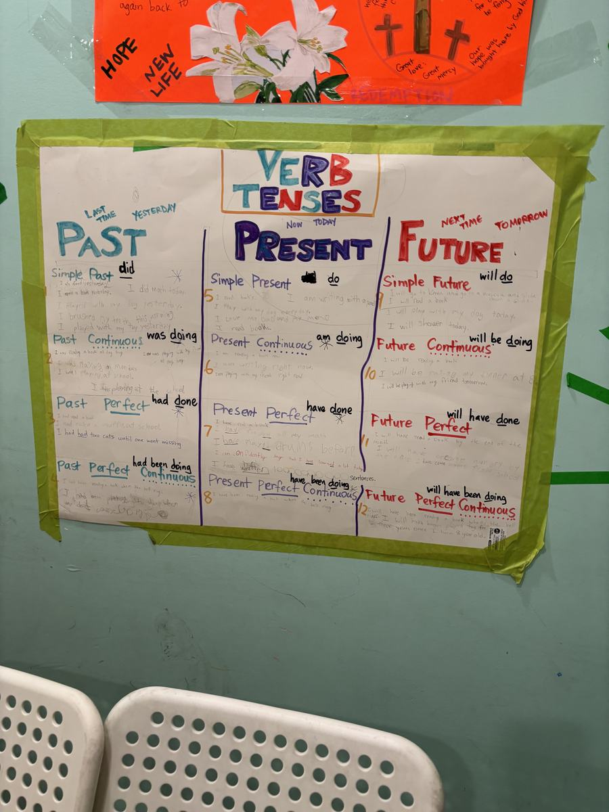
✏️ And Then They Wrote Their Own Not copied — invented
Here is the part that makes it stick. Under every single one of the twelve boxes, the students had to write their own example sentences — about their own lives.
“I brushed my teeth this morning.” · “I am writing with a pencil.” · “I have played drums before.” · “I had two cats until one went missing.” · “I will go to Korea and go to a museum and slide down a slide.” · “I will be eating my dinner at 8.”
You cannot write those by copying a rule off a board. You have to understand what the tense actually means before you can pick something true from your own week to put in it.
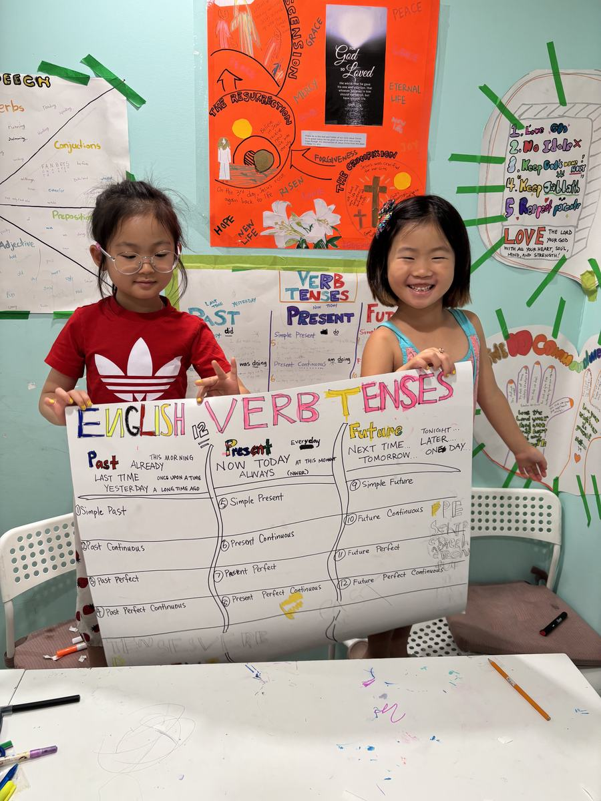
🧩 Parts of Speech The other half of grammar
Alongside the tenses came a map of the parts of speech — the categories every word in English belongs to. Same approach: one big sheet, everything visible at once, examples branching off each spoke.
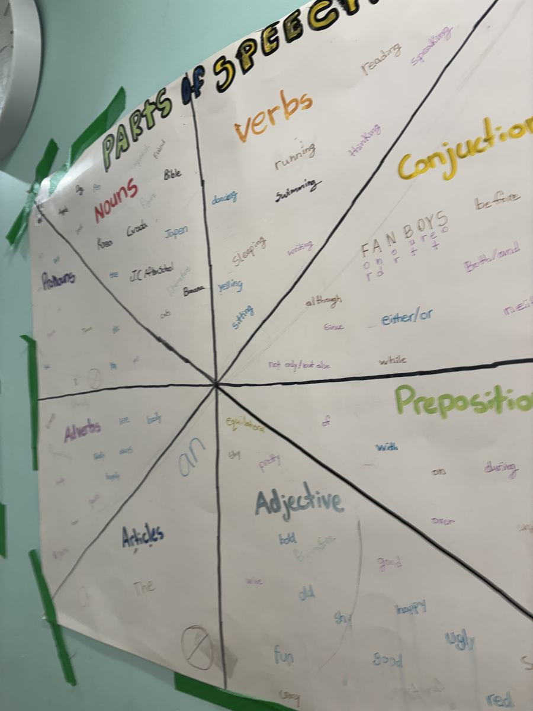
📐 The New Project: How To… Explaining is harder than knowing
Then the week's new project began, and it is a good one: each student is making an instructional poster — a step-by-step guide to something they already know how to do.
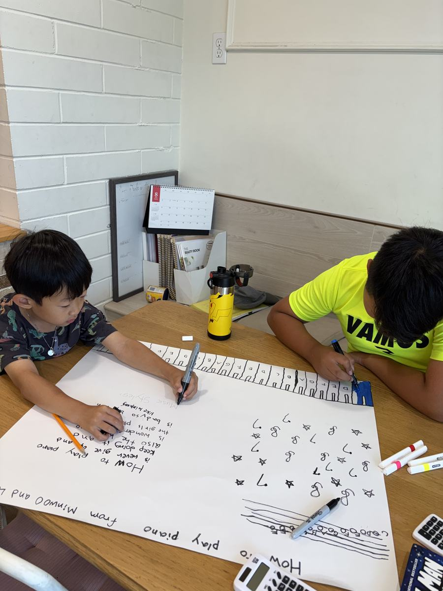
Writing instructions is deceptively hard. You have to break something automatic into ordered steps, decide what a beginner already knows, and say it clearly enough that a stranger could follow along. It is the same skill as explaining your maths working — just with a different subject.
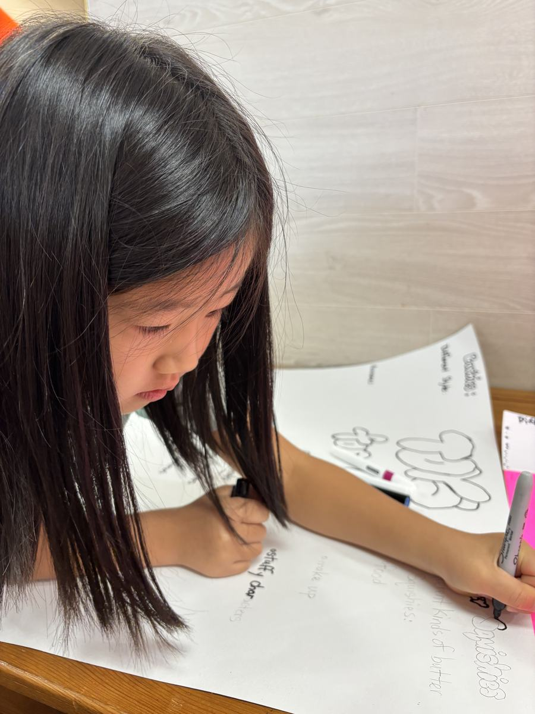
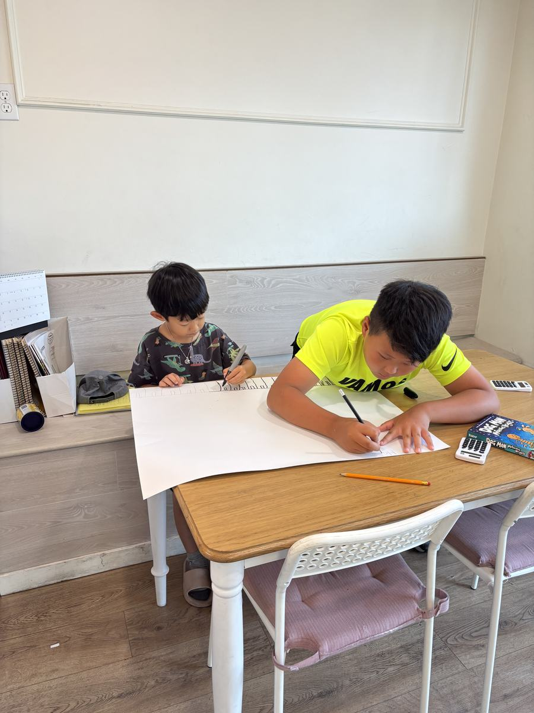
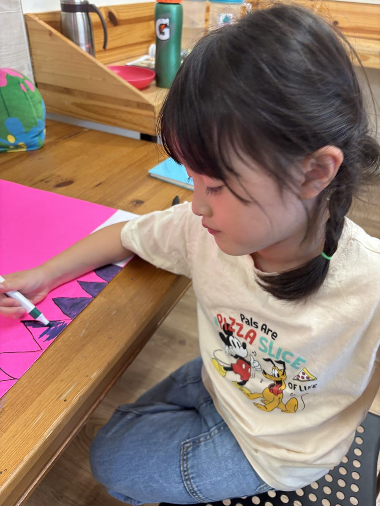
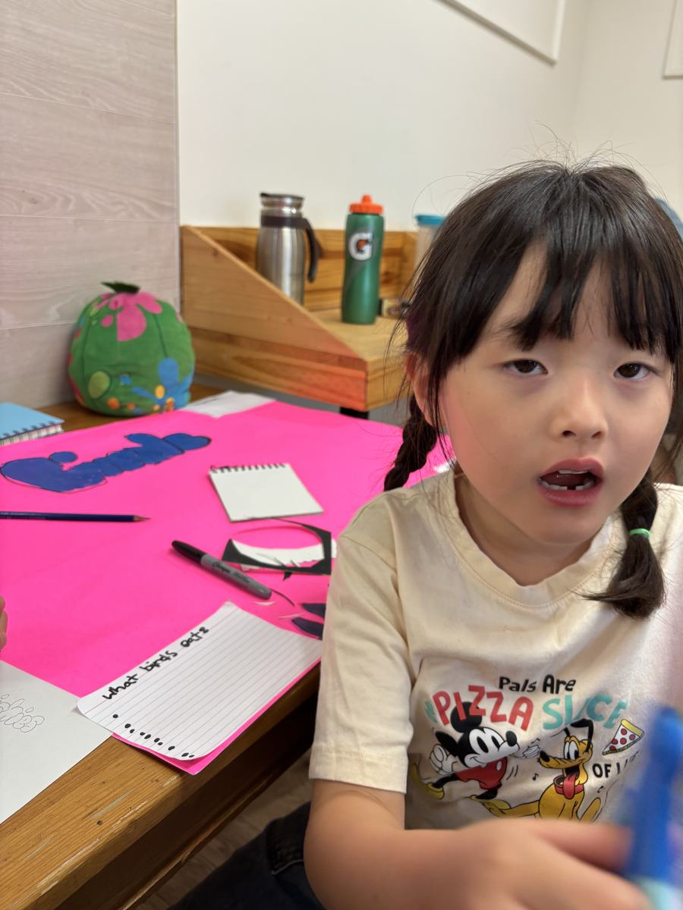
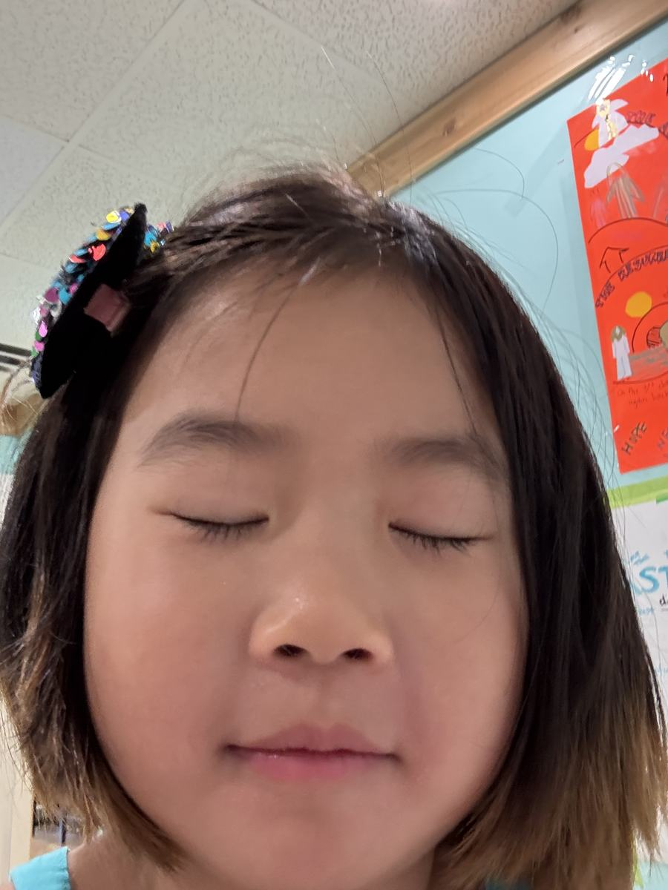
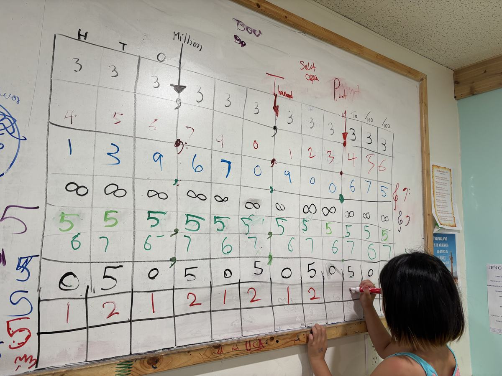
🍚 Lunch Rice · beef · kimchi
Lunch was braised beef with rice and freshly cut kimchi.
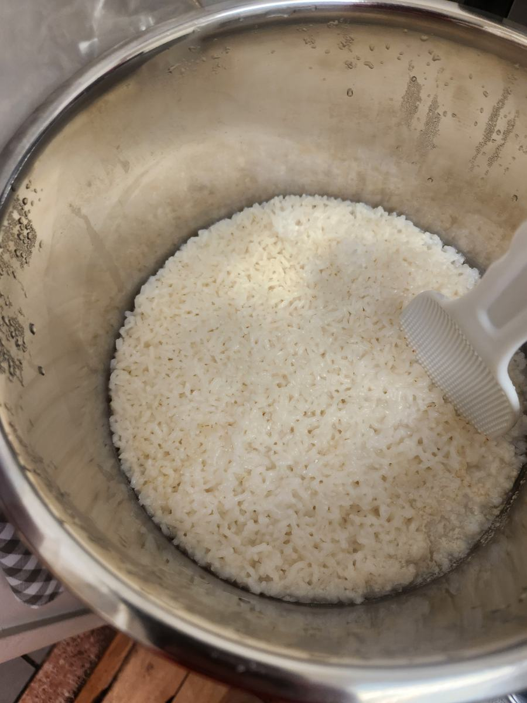
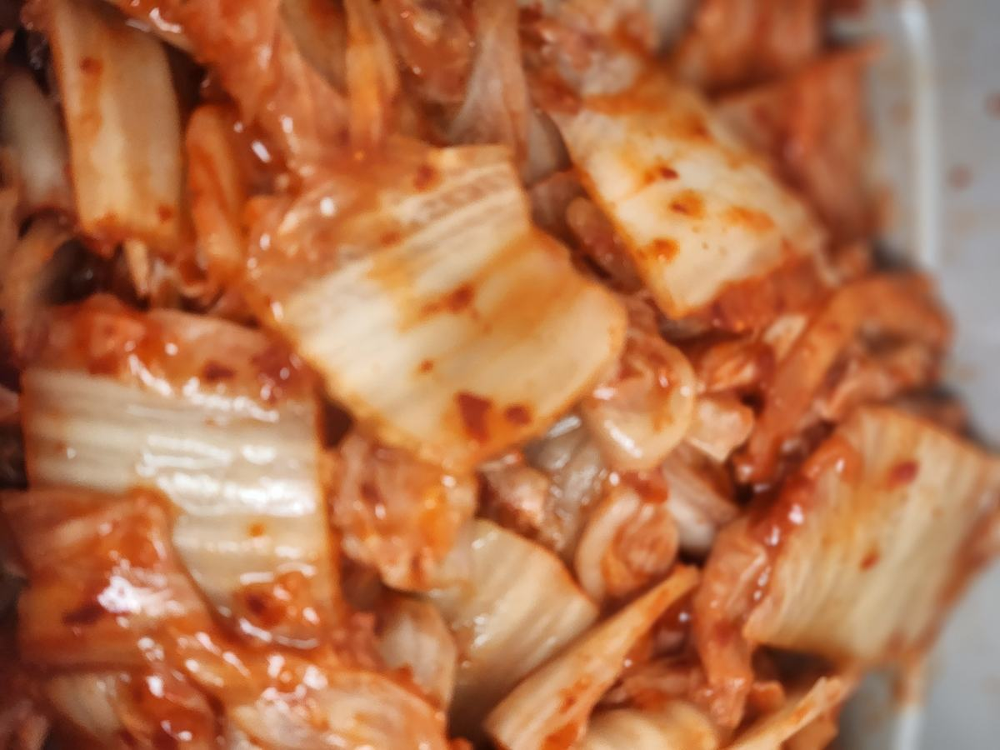
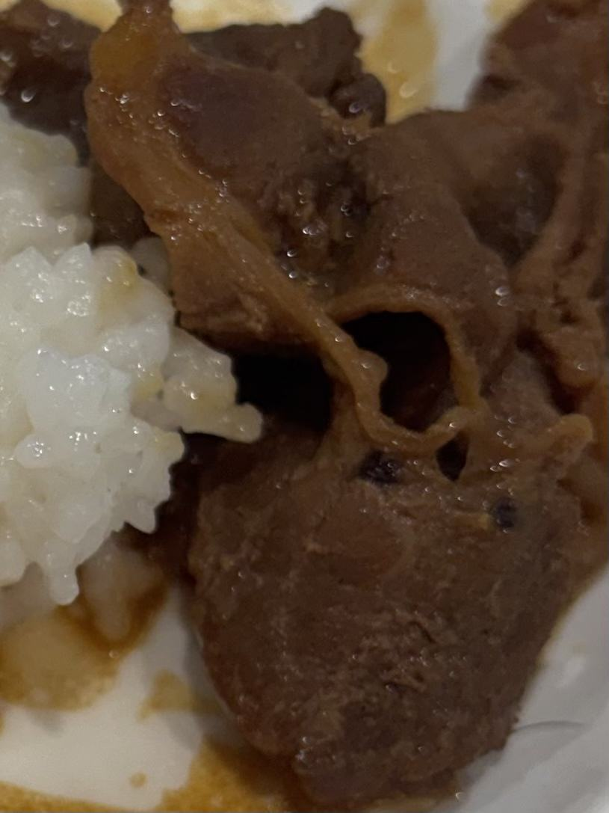
Ask them tonight for a sentence in the future perfect continuous. They wrote one today — about themselves. It will be more interesting than you expect.
New subject, same approach: put the whole system where everyone can see it, then make each child put something of their own into it. 🕰️